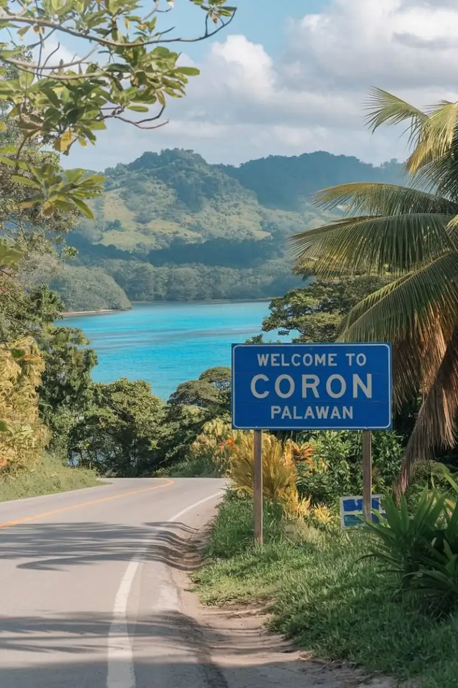
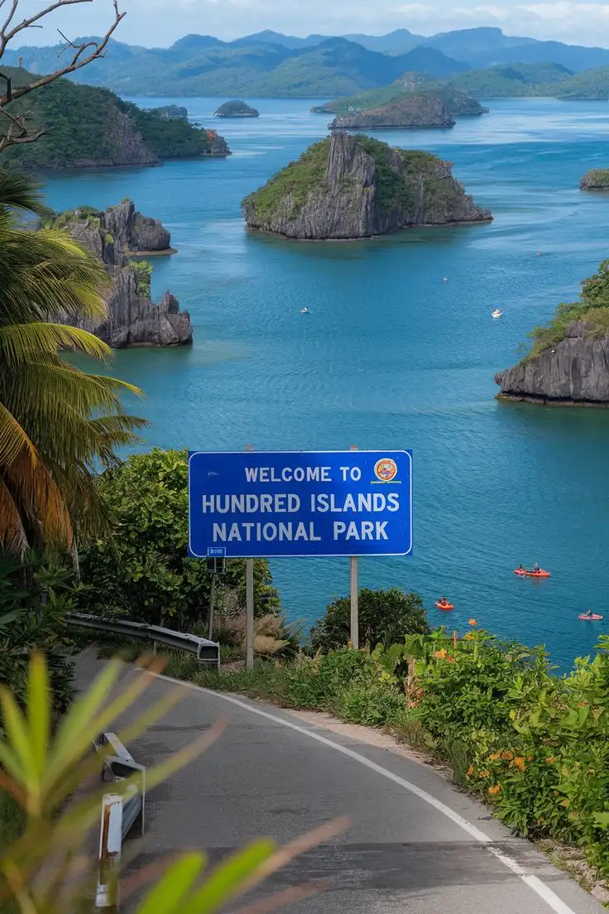

Discover the hidden magic of Philippines
About Philippines
Discover the Philippines: A Tropical Paradise Awaits
Located in Southeast Asia, the Philippines is an archipelago of over 7,600 islands, boasting pristine white-sand beaches, crystal-clear waters, and breathtaking biodiversity. With a rich culture shaped by indigenous, Spanish, and Asian influences, this destination offers the perfect mix of adventure, relaxation, and history.From the stunning cliffs of El Nido to the majestic Banaue Rice Terraces, the Philippines has something for every traveler. Indulge in its unique cuisine, experience its vibrant festivals, and immerse yourself in the warmth of its people. Your next great adventure starts here!
Subscribe to our forum and receive the latest news about our trips.
This could be your time to travel!!
Come and discover these wonderful places
Discover Bohol: A Natural and Cultural Paradise in the Philippines Bohol is one of the most stunning gems of the Philippines, renowned for its breathtaking blend of natural beauty, history, and culture. Located in the Central Visayas region, this island captivates travelers with its iconic Chocolate Hills, white sandy beaches, crystal-clear rivers, and rich biodiversity.Here, you can encounter unique wildlife like the tarsier, one of the world’s smallest primates, cruise along the serene Loboc River, or dive into the turquoise waters of Panglao. Bohol is also a destination steeped in history, with ancient colonial churches and traditions that reflect its Filipino and Spanish heritage.Whether you seek adventure, relaxation, or cultural immersion, Bohol offers an unforgettable experience in the heart of the Philippine archipelago.
Discover Coron: A Tropical Paradise in the Philippines Coron, located in the province of Palawan, is a dream destination known for its breathtaking natural landscapes and rich marine biodiversity. With crystal-clear waters, hidden lagoons, and majestic limestone formations, it is a haven for nature lovers and adventure seekers alike. Famous for its world-class diving spots, Coron is home to a collection of World War II shipwrecks, vibrant coral reefs, and natural hot springs. Top attractions include Kayangan Lake, Twin Lagoon, and Banol Beach, each offering a unique and unforgettable experience.Whether you’re exploring its underwater wonders, relaxing on pristine beaches, or marveling at its stunning scenery, Coron promises an unforgettable escape into paradise.
Discover Dasol: A Hidden Gem in Pangasinan, Philippines Dasol, a charming municipality in the province of Pangasinan, is the perfect destination for those seeking pristine beaches and a peaceful escape from mass tourism. With its coastline kissed by crystal-clear waters and golden sands, this paradise offers both relaxation and adventure. Among its natural treasures is the stunning Colibra Island, known for its white sand and turquoise waters, perfect for swimming and snorkeling. You can also explore Tambobong Beach, a serene spot surrounded by nature, or venture to the rock formations of Cabalitian Island. If you're looking for an off-the-beaten-path destination where natural beauty and tranquility blend perfectly, Dasol is the ideal place for your next getaway in the Philippines.
Discover Hundred Islands: A Natural Paradise in Pangasinan, Philippines The Hundred Islands National Park, located in the province of Pangasinan, is one of the most breathtaking destinations in the Philippines. This archipelago, consisting of 124 islands at low tide and 123 at high tide, boasts stunning landscapes, white sandy beaches, and crystal-clear waters—perfect for both adventure and relaxation. Among its most popular islands are Governor’s Island, known for its scenic viewpoints; Quezon Island, ideal for swimming and kayaking; and Children’s Island, perfect for families with its shallow waters. Visitors can also enjoy snorkeling, diving, and exploring hidden caves. If you’re looking for a destination that combines nature, adventure, and unforgettable panoramic views, Hundred Islands is the perfect place to experience the unique beauty of the Philippines.
Discover Bulacan: History, Culture, and Nature in the Philippines Bulacan, located in the Central Luzon region, is a province rich in history, stunning natural landscapes, and a vibrant cultural scene. Known as the "Cradle of Heroes" in the Philippines, Bulacan played a crucial role in the country's fight for independence and is home to significant historical landmarks and monuments. Beyond its history, Bulacan offers breathtaking natural wonders such as the Biak-na-Bato Caves, the serene Balagtas City Botanical Garden and Ecological Center, and refreshing waterfalls like Verdivia Falls. The province is also famous for its colorful festivals, including the Singkaban Festival, which showcases local arts and culture. Whether you're exploring its historical sites, enjoying its natural beauty, or immersing yourself in its traditions, Bulacan offers a perfect blend of the past and present, making it an unforgettable destination in the Philippines.
A Journey of Flavors
Filipino cuisine is a vibrant reflection of the country’s rich history and diverse culture. Influenced by Malay, Chinese, Spanish, and American traditions, Filipino dishes create a unique harmony of sweet, salty, sour, and umami flavors. From the beloved Adobo, with its perfect blend of soy sauce and vinegar, to the festive Lechón, Filipino food is a celebration of tradition and togetherness. Fresh ingredients such as coconut, rice, seafood, and tropical fruits play a vital role in local dishes. More than just food, Filipino cuisine is about hospitality and sharing, often enjoyed in large family gatherings and festive occasions. Explore the flavors of the Philippines and embark on a culinary adventure filled with history, tradition, and irresistible taste.